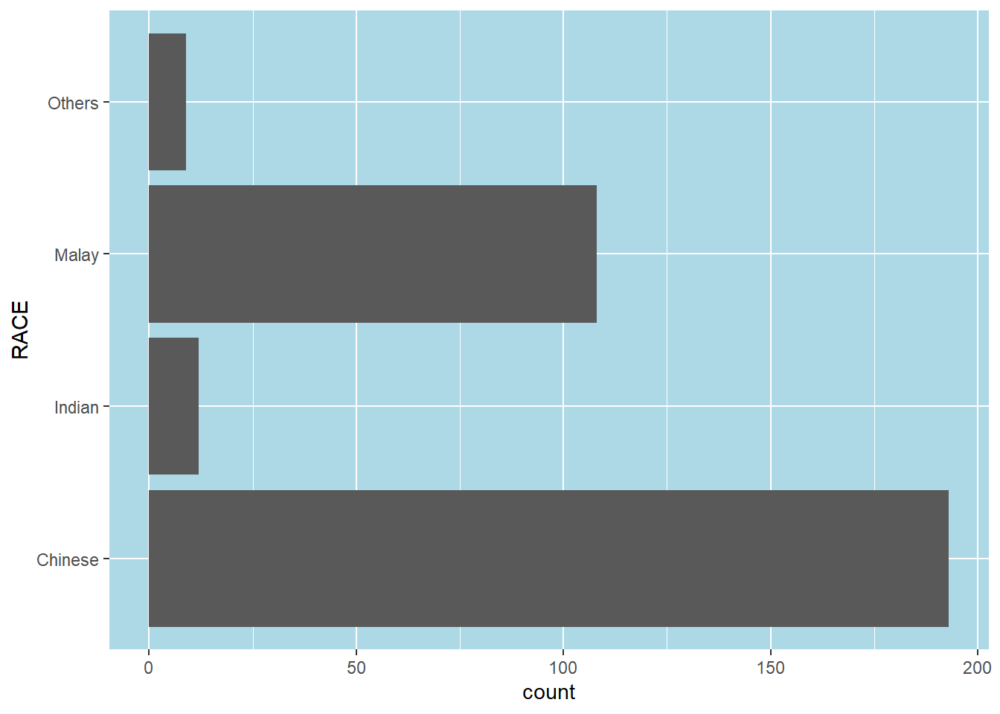
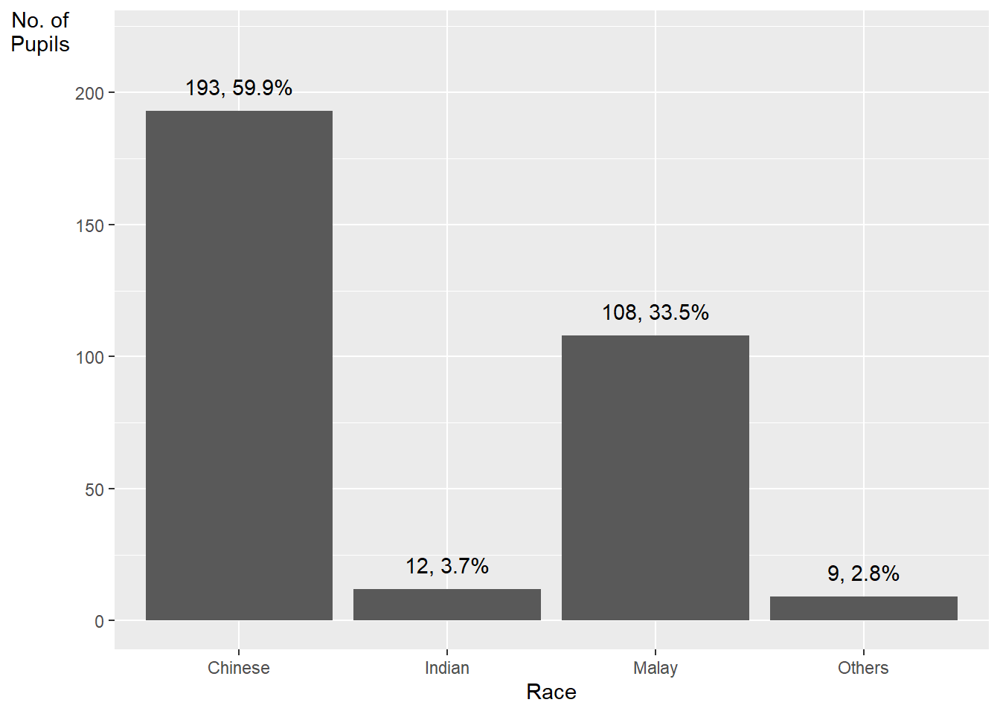
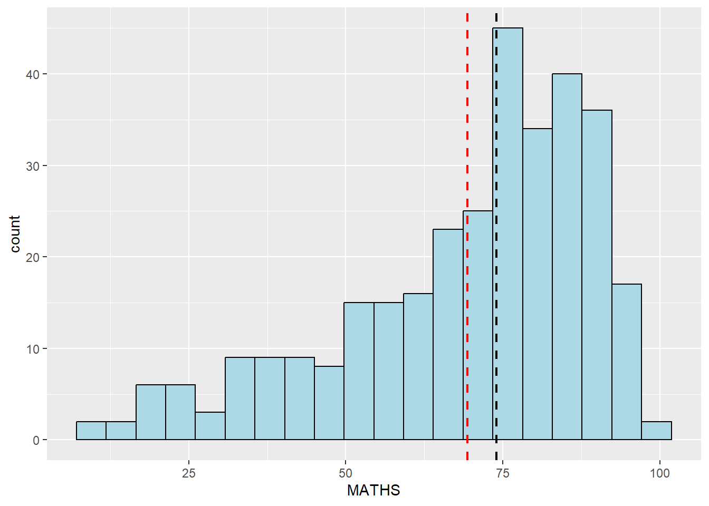
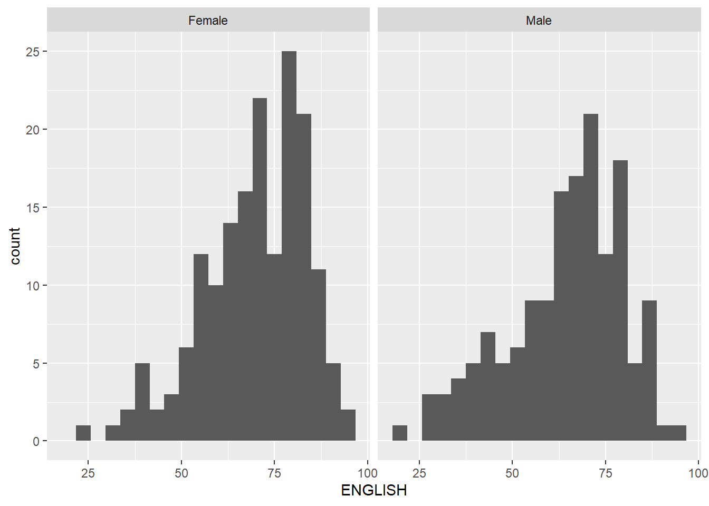
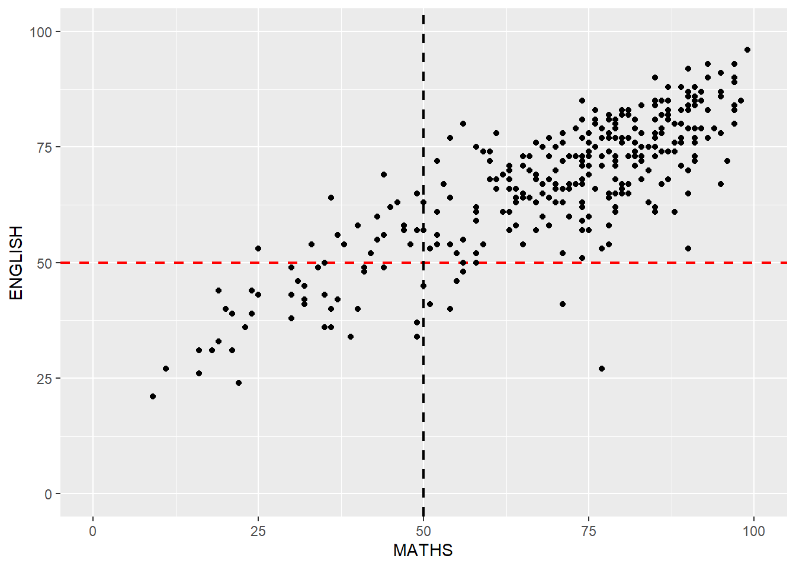

pacman::p_load(tidyverse)In-class_Ex1
Getting started
1 Installing and loading the required libraries
2 Import Data
exam_data <- read_csv("data/Exam_data.csv")Rows: 322 Columns: 7
── Column specification ────────────────────────────────────────────────────────
Delimiter: ","
chr (4): ID, CLASS, GENDER, RACE
dbl (3): ENGLISH, MATHS, SCIENCE
ℹ Use `spec()` to retrieve the full column specification for this data.
ℹ Specify the column types or set `show_col_types = FALSE` to quiet this message.3 Working with theme
Plot a horizontal bar chart using theme().
Changing the colors of plot panel background of theme_minimal() to light blue and the color of grid lines to white.
ggplot(data=exam_data,
aes(x=RACE)) +
geom_bar() +
coord_flip() +
theme(panel.background = element_rect(fill = "lightblue"),
panel.grid.major = element_line(color = "white"))
4 Designing Data-drive Graphics for Analysis I
The original design, A simple vertical bar chart for frequency analysis. Critics:
y-aixs label is not clear (i.e. count) To support effective comparison, the bars should be sorted by their resepctive frequencies. For static graph, frequency values should be added to provide addition information.
ggplot(data=exam_data,
aes(x=RACE)) +
geom_bar()
With reference to the critics on the earlier paragraph, create a makeover looks similar to the figure at below.
ggplot(data=exam_data,
aes(x=RACE)) +
geom_bar() +
xlab("Race") +
ylab("No. of\nPupils") +
ylim(0,220) +
geom_text(stat="count",
aes(label=paste0(after_stat(count), ", ",
round(after_stat(count)/sum(after_stat(count))*100, 1), "%")),
vjust=-1) +
theme(axis.title.y=element_text(angle = 0))
geom_text()adds text labels to the plotstat = "count"tells ggplot to calculate the count of each baraes(label = paste0(after_stat(count), ", ", round(after_stat(count)/sum(after_stat(count))*100, 1), "%"))maps the text label to a string that combines three pieces of information:after_stat(count)calculates the count of each bar, after thestat = "count"argument has been applied to the data. This is equivalent to the..count..variable .round(after_stat(count)/sum(after_stat(count))*100, 1)calculates the percentage of each bar’s count relative to the total count, and rounds it to one decimal place. Thesum(after_stat(count))calculates the total count of all bars, after thestat = "count"argument has been applied to the data.paste0()combines the count and percentage values into a single string, separated by a comma and a space.
vjust = -1adjusts the vertical justification of the labels so that they appear above the top of each bar.
Method 2 This code chunk uses fct_infreq() of forcats package.
exam_data %>%
mutate(RACE = fct_infreq(RACE)) %>%
ggplot(aes(x = RACE)) +
geom_bar()+
ylim(0,220) +
geom_text(stat="count",
aes(label=paste0(..count.., ", ",
round(..count../sum(..count..)*100,
1), "%")),
vjust=-1) +
xlab("Race") +
ylab("No. of\nPupils") +
theme(axis.title.y=element_text(angle = 0))Warning: The dot-dot notation (`..count..`) was deprecated in ggplot2 3.4.0.
ℹ Please use `after_stat(count)` instead.
mutate(RACE = fct_infreq(RACE)) sorts the levels of the RACE variable in descending order of frequency. The fct_infreq() function from the forcats package is used to reorder the levels.
5 Designing Data-drive Graphics for Analysis II
The original design

Makeover design
Adding mean and median lines on the histogram plot.
Change fill color and line color
ggplot(data=exam_data,
aes(x= MATHS)) +
geom_histogram(bins=20,
color="black",
fill="light blue") +
geom_vline(aes(xintercept=mean(MATHS)), color="red",
linetype="dashed", size=0.85) +
geom_vline(aes(xintercept=median(MATHS)), color="black",
linetype="dashed", size=0.85)Warning: Using `size` aesthetic for lines was deprecated in ggplot2 3.4.0.
ℹ Please use `linewidth` instead.
6 Designing Data-drive Graphics for Analysis III
The original design
The histograms at below are elegantly designed but not informative. This is because they only reveal the distribution of English scores by gender but without context such as all pupils.
ggplot(data=exam_data,
aes(x= ENGLISH)) +
geom_histogram(bins=20) +
facet_wrap(~ GENDER)
Create a makeover looks similar to the figure below. The background histograms show the distribution of English scores for all pupils.
d <- exam_data
d_bg <- d[, -3]
ggplot(d, aes(x = ENGLISH, fill = GENDER)) +
geom_histogram(data = d_bg, fill = "grey", alpha = .5) +
geom_histogram(colour = "black") +
facet_wrap(~ GENDER) +
guides(fill = FALSE) +
theme_bw()Warning: The `<scale>` argument of `guides()` cannot be `FALSE`. Use "none" instead as
of ggplot2 3.3.4.`stat_bin()` using `bins = 30`. Pick better value with `binwidth`.
`stat_bin()` using `bins = 30`. Pick better value with `binwidth`.
The code first creates a copy of the original dataset called d, and then creates another copy called d_bg by removing the third column (which corresponds to the RACE variable) using the [ , -3] syntax. This is done because we want to create a histogram of ENGLISH scores for all pupils (regardless of their race) as a background to the histograms of male and female pupils.
Two geom_histogram() layers are added: the first one with the data argument set to d_bg, which creates a background histogram of ENGLISH scores for all pupils with a fill color of “grey” and an alpha value of 0.5 to make it semi-transparent. The second geom_histogram() layer creates a histogram of ENGLISH scores for male and female pupils separately, with black borders and default fill colors. The facet_wrap() function is used to create separate histograms for male and female pupils. Finally, the guides() function is used to remove the fill legend, and theme_bw() is used to set a black-and-white theme for the plot.
7 Designing Data-drive Graphics for Analysis IV
The original design
The code chunk below plots a scatterplot showing the Maths and English grades of pupils by using geom_point().
ggplot(data=exam_data,
aes(x= MATHS,
y=ENGLISH)) +
geom_point() 
Create a makeover that looks similar to the figure below.
ggplot(data=exam_data,
aes(x= MATHS,
y=ENGLISH)) +
xlim(0,100) +
ylim(0,100) +
geom_hline(yintercept=50, color="red",
linetype="dashed", size=0.85) +
geom_vline(xintercept=50, color="black",
linetype="dashed", size=0.85) +
geom_point() 
The xlim() and ylim() functions are used to set the limits of the x and y axes to 0-100, respectively.
The geom_hline() and geom_vline() functions are used to add a horizontal dashed line at y=50 with a red color and a vertical dashed line at x=50 with a black color, both with a line type of “dashed” and a size of 0.85. These lines represent the median score for each subject, i.e. the score at which half of the pupils scored higher and half scored lower.